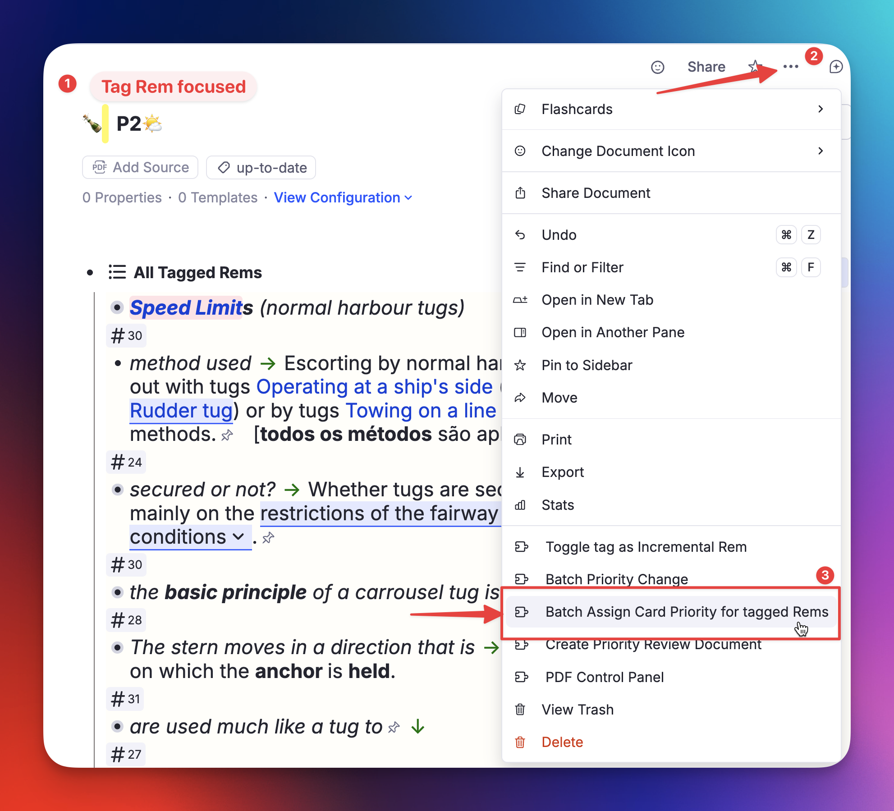
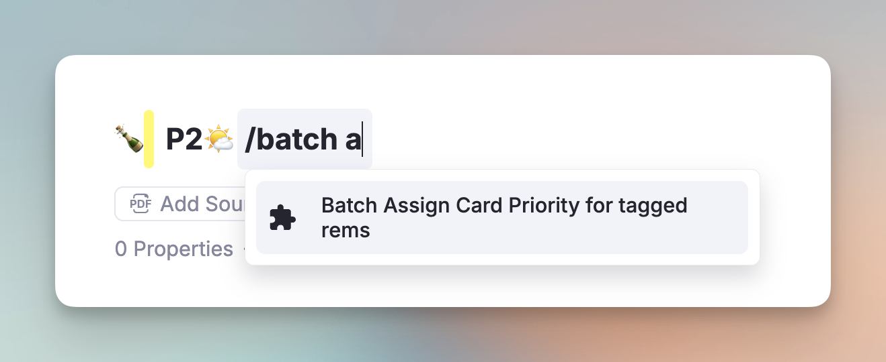
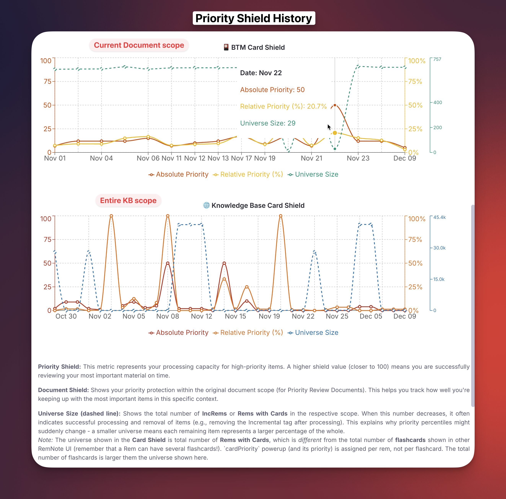

4a. Priorities for Flashcards
While Incremental Rem Prioritization helps you manage the intake of new information (articles, PDFs, videos), Flashcard Prioritization helps you manage the retention of what you've already learned.
Standard Spaced Repetition Systems (SRS) treat every due card as equally urgent. If you have 500 due cards, "Card #1" is mathematically just as important as "Card #500". In reality, remembering a core concept for your exam is far more critical than remembering a piece of trivia you added months ago.
This page explains how the plugin allows you to layer a priority system on top of RemNote's standard flashcards.
Switching it on¶
Flashcard prioritisation is off by default. Turn it on in the plugin's settings popup — run Incremental RemNote: Settings (quick code is) → Flashcard Prioritisation → Enable Flashcard Prioritisation — then reload RemNote. (Before v1.0.45 this switch lived in RemNote's own plugin settings panel.)
It is opt-in because it is the one part of the plugin that works across your entire knowledge base rather than on the Rems you are handling. While it is on, the plugin tags flashcard-bearing Rems with the cardPriority powerup and keeps those tags in step as you edit — on a large library that means a long initial pass and continuous background work, and RemNote can feel slow until it settles.
Only turn it on if you create Priority Review Documents for flashcards and review the queue there. That is what the tags are for. If you are unsure, leave it off — you can switch it on later at any time and the plugin will build what it needs then.
What still works with it off¶
- Everything that is not about flashcard priority: extracts, incremental reading, PDF and video, the scheduler, the queue, the Mastery Drill, and priorities on Incremental Rems themselves.
- A flashcard's inherited priority is still resolved and still displayed. The plugin walks up the ancestry on each read, so the priority widgets, the queue badge and
Alt+Pall show the correct value — it simply is not written to the Rem. - Priorities you set yourself are still saved. Setting a priority on a flashcard (
Alt+P, the batch tools) records it with sourcemanual, and dismissing an Incremental Rem still stampsincrementalon the flashcards beneath it. Those two are deliberate acts on identified Rems, so the switch does not block them.
What is skipped is the bulk index: the KB-wide tagging pass, the inheritance cascade over descendants, the priority cache, and everything built on it — the Priority Shield, relative percentiles, and flashcards in Priority Review Documents.
Switching it back off¶
Turning the setting off stops all of that work immediately, but it does not undo it: every cardPriority tag already written stays on your Rems, with its Priority, Priority Source and Last Updated slots.
So, on the next reload after you switch it off, the plugin offers to clear them for you:
The plugin has stopped writing card priorities, but N tag(s) it created automatically (source: inherited or default) are still on your Rems. Would you like to remove them now?
- OK removes them.
- Cancel leaves everything as it is and tells you how to do it later. The offer is made once per switch-off, never repeatedly, and never on Light Mode devices — the cleanup is a knowledge-base-wide write, which is what Light Mode exists to avoid, so it waits for a Full Mode session.
You can run the same cleanup at any time with Remove CardPriority Tags… → inherited & default only.
Nothing is lost either way. Inherited and default priorities are computed from your document tree, so they are rebuilt exactly by switching the setting back on and running Update all inherited Card Priorities. Your manual priorities, the incremental anchors left by dismissed Incremental Rems, and your shield history are never touched by this cleanup.
How It Works¶
Unlike Incremental Rems, where the plugin completely controls the scheduler, Flashcards live inside RemNote's native database. To manage them, the plugin adds a special powerup (cardPriority) to your Rems.
Priority Sources¶
Every flashcard in your knowledge base is assigned a priority from 0-100 (Lower = Higher Priority) based on one of four sources:
- Manual (Highest Strength): You explicitly set a priority for this specific Rem. This overrides everything else.
- Incremental (Highest Strength): When you finish reviewing an Incremental Rem (e.g. by clicking "Dismiss"), its priority is automatically synced to its flashcards with this source type. Like a "manual" priority, it is "sticky" and won't be overwritten by inherited or default values, ensuring your specific prioritization from your reading workflow is preserved.
- Visual Cue: In the Priority widgets, both
manualandincrementalpriorities appear in bold (e.g., P10), making it clear they are explicitly assigned values. Inherited and default priorities appear in normal weight. - The Rem itself is always stamped, whether or not it currently owns any flashcards, and in Light Mode as well as Full Mode. Dismissing removes the
Incrementalpowerup, and with it the only record of that reading priority; thecardPrioritytag left behind is what keeps the value, and what every card created under that Rem later inherits from. A Rem whose priority you set to 16 and then dismissed keeps 16 for its subtree, instead of falling back to whatever a distant ancestor happens to carry. Only amanualpriority already on the Rem is left untouched.
- Visual Cue: In the Priority widgets, both
- Inherited (Medium Strength): If a Rem has no manual or incremental priority, it looks up its ancestry tree. It inherits the priority of the nearest ancestor that has:
- A Manual or Incremental Flashcard Priority set.
- OR An Incremental Rem Priority set (this creates a seamless bridge between your reading list and your flashcards).
- Default (Lowest Strength): If no ancestor has a priority, the card defaults to 50 (or whatever value you set in Settings).
The Inheritance Logic¶
This is the "magic" that makes the system manageable. You don't need to prioritize every single card.
- Scenario: You are reading a high-priority book (Priority: 10).
- Action: You highlight a sentence and create a flashcard from it.
- Result: That new flashcard automatically inherits Priority 10.
- Benefit: If you decide the whole book is less important later and change the book's priority to 80, all flashcards generated from it update to 80 instantly (unless you manually overrode specific ones or specific branches / chapters / sections).
Where a priority is stored¶
A priority is a value on the cardPriority powerup. Until v1.0.48 it lived in a visible slot, which means RemNote drew a Priority — 31 row under every prioritised Rem. From v1.0.48 it lives in a hidden slot instead, and that row is gone.
Why it moved¶
The difference between the two is where the value physically lives. Since RemNote's v1.27 storage overhaul, a hidden slot holds its value directly on the Rem, while a visible one materialises it as a child Rem underneath. Three consequences follow, and all three favour hidden:
Fewer moving parts. The plugin writes this value on tens of thousands of Rems. Every one of them used to carry an extra child Rem that could be duplicated, detached from its slot definition, or left behind by an import — states this plugin has repair tooling for precisely because they happen. A value stored directly has none of those failure modes.
Less clutter. A priority is bookkeeping the plugin does on your behalf. It does not need a row in your outline, and on a knowledge base where most flashcards carry one, those rows were the plugin's largest visible footprint in your notes.
It stops RemNote blanking out table cells. When the prioritised Rem is itself a table cell — which is what a filled tag slot is — RemNote's cell renderer sees that child Rem, switches the cell into list mode, draws the child, and never draws the cell's own content at all. The cell shows Priority — 31 where your text should be. It affects simple and advanced tables alike: any column whose cells carry flashcards, because those cells are the Rems the plugin tags. A hidden slot leaves nothing there for the renderer to mistake for cell content.
The migration¶
The first time the plugin starts and finds visible Priority rows still in place, it offers to move them:
- Every priority is backed up first, to your device and to a JSON file you keep. If the backup cannot be written, the migration refuses to run.
- Values move to the hidden slot one Rem at a time, and each one is read back before the old row is deleted — a value that failed to write keeps its visible row, so nothing can be lost in the gap.
- A
Priorityrow that has children of its own is never deleted, since removing it would take that subtree with it. Its value still moves to the hidden slot; the report says how many were kept, and re-running removes them once you have moved those children yourself. - Interrupting it is safe. Each Rem is finished before the next is started, so a crash, a restart or a quit leaves the Rems done actually done and the rest untouched. Run the command again to finish; already-migrated Rems are skipped, and the backup from the first attempt is reused rather than overwritten — it holds the pre-migration state, which is the one worth going back to.
- Nothing else changes: the numbers, the sources, inheritance, the Card Shield, percentiles, the badges and the Priority Review Documents all work exactly as before.
It is offered on every start until it has been done, because until then your tables are still rendering the wrong thing. Declining offers a never ask again, and the command is always available.
Retiring the old slot¶
Deleting the values does not delete the slot, so a bare Priority — Empty row is left behind: RemNote draws a row for every slot the plugin registers, whether or not it holds anything. It goes away once the plugin stops registering that slot — and it only does that on positive proof that nothing is left in it: a migration run that finished with no failures, no rows kept back and no errors, or a full scan of every tagged Rem finding none.
Until then the slot stays registered, which is deliberate. An unregistered slot cannot be read, so retiring one that still held a value would turn that value into an unreadable one rather than a visible row. A knowledge base whose migration was interrupted, or finished before that check existed, gets the full scan automatically on the next start; expect one extra pass of a few seconds, once, then a reload to see the row disappear.
Undoing takes two steps once the slot is retired
A retired slot cannot be written either, so restoring into it would silently write nothing. The first run of Undo Card Priority Hidden-Slot Migration… un-retires the slot and asks you to reload; the second actually restores the values. Your priorities stay readable in the hidden slot in between.
One thing you lose
Priorities can no longer be typed straight into the outline, because there is no longer a row to type into. Use the Priority widget (Alt+P), Quick Priority or the batch tools instead.
Two commands drive it manually:
- Migrate Card Priorities to Hidden Slot… — runs it now, and is also how you retry after a partial run. Rems that failed keep their visible row, so a second run picks up exactly those.
- Undo Card Priority Hidden-Slot Migration… — restores the backup, which puts the visible rows back. The table problem comes back with them; that is what makes it a true undo.
Until a knowledge base is migrated the plugin writes both slots, so hand edits of the Priority row keep working in the meantime. Reads always prefer the hidden slot and fall back to the visible one, so a half-migrated knowledge base — or one migrated on your desktop and not yet synced to your phone — reads correctly throughout.
Setting & Managing Priorities¶
1. The Unified Priority Widget (Alt+P)¶
Press Alt+P (or Opt+P) on any Rem to open the Priority Widget. This widget is context-aware and changes based on what you are selecting:
- Inc Rem Section: Appears if the item is an Incremental Rem.
- Flashcard Section: Appears if the item has flashcards.
- Inheritance Section: Appears if the item has the
cardPrioritypowerup but no flashcards of its own — meaning the powerup exists purely as an inheritance anchor for descendant cards. This is also shown for IncRems that have no cards but where you want to set a card-priority anchor for their descendants. - Clear Card Priority button: When this section is the only one visible and the Rem has no flashcards of its own, a Clear Card Priority button appears at the bottom of the section. This removes the inheritance anchor in a single click — previously the only way was to manually find and delete the
cardPrioritytag on the Rem in the editor. The button is intentionally absent from any Rem that has its own flashcards, since those must always retain a card priority.
Handling Conflicts: If a Rem is both an Incremental Rem (reading material) AND has Flashcards, you might want different priorities for each. The widget allows this, but warns you if they diverge, offering buttons to sync them with a single click.
2. Batch Assignment (For Tag or Reference Migration)¶
If you previously used tags like #HighPriority or #P1 to organise your cards, or if you want to bulk-assign priorities to all rems that reference a given rem, you can do so in bulk:
- Focus on the anchor rem (e.g.,
#Important, or any rem that other rems reference or are tagged with). - Open the Document Menu (⋯) and click "Batch Assign Card Priority for tagged/referencing Rems" — or run the command "Batch Assign Card Priority for tagged/referencing rems" (
Opt+Shift+C) from the Command Palette.


- Set a priority range (e.g., 3-12).
- The plugin will apply this
Manualpriority to every Rem tagged with#Important(or that references the Rem).

3. Unified Batch Priority Change¶
While the tool above is specialized for migrations, the Prioritization-&-Sorting#batch-priority-change-increms--flashcards widget provides a unified interface for managing existing priorities across an entire document tree.
- Unified Interface: Shows both Incremental Rems and Flashcard priorities in a single table.
- Bulk Adjustment: Increase or decrease all selected card priorities by a specific amount or percentage.
- Range Spreading: Evenly distribute priorities across a range (e.g., set top cards from 0 to 10).
- Filtering: Use the "Has Cards" filter to focus exclusively on flashcard management.
Access: Search for "Batch Priority Change" in the Command Palette, or use the Document Menu (⋯) on any Rem.
Widget features:
-
Scope selector — choose which rems to load:
- Tagged Rems — rems tagged with the anchor rem (classic use-case)
- Rem References — rems that contain an
[anchor](anchor.md)inline reference - Both — union of the above, deduplicated
Option Behaviour Tagged Rems Rems tagged with the anchor rem (original behaviour) Rem References Rems that contain an [anchor](anchor.md)reference (remsReferencingThis)Both Union of the above, deduplicated -
Breadcrumb tree — each rem row shows its KB ancestry path (e.g.
PSCPP › SH › A – Definições) so you can immediately tell where it lives, without a full tree traversal. Rows are sorted by breadcrumb, so rems from the same location cluster together. -
Priority & Source columns — see each rem's current card priority at a glance, colour-coded by source (yellow = manual, green = incremental, grey = inherited, blue = IncRem-only).
- The Priority column shows the current card priority with colour-coded badges:
- 🟡 Yellow = manually set
- 🟢 Green = synced from an Incremental Rem
- ⬜ Grey/outlined = inherited (shown but visually subdued)
- 🔵 Blue = IncRem priority only (no card priority yet)
- The Priority column shows the current card priority with colour-coded badges:
-
Front → Back names — rems with back text are shown as
Front → Back, making flashcard-style rems immediately recognisable. -
Filters:
Filter Description Only rems with cards Checked by default — excludes rems whose entire subtree has zero flashcards, since assigning a card priority to them would be pointless Priority range Filter by existing priority value (0–100); rems with no priority are always shown -
Assignment Range — assign random priorities within a Min–Max range to all selected rems.
- IncRem preference — optionally use a rem's existing IncRem priority as its card priority instead of a random value.
- Overwrite guard — rems with existing manual/incremental priorities require an explicit "Overwrite" checkbox before they can be updated.
Sample Use Cases:
-
Migrating from a previous tag prioritization system (e.g. p1, p2, p3 tags) (see image above)
-
Decreasing the priority using an Universal Descriptor considered of lower importance (e.g.
~Translation)

The "Queue Problem" & The Solution¶
This is the most critical concept to understand:
⚠️ RemNote's native flashcard queue DOES NOT respect these priorities.
If you just click "Flashcards" in the sidebar, RemNote will show you cards in its standard SRS order. It does not know about the cardPriority powerup.
The Solution: Priority Review Documents¶
To review your flashcards in priority order, you must use the Priority Review Document feature.
- This feature scans your database for due cards.
- It looks at the priorities you've set (Manual/Inherited).
- It generates a temporary document containing portals to your Highest Priority Due Cards.
- You review that temporary document.
This effectively bypasses the native scheduler's "all cards are equal" logic and forces a "best cards first" workflow.
Monitoring Your Load: Card Shield¶
Just like for reading material, the queue displays a Priority Shield for flashcards (toggleable in settings).

- What it shows: The priority of the most important due card you haven't reviewed yet.
- Interpretation:
- Shield = P10: You are safe. You've reviewed everything more important than P10.
- Shield = P1: Danger. You have extremely critical cards pending review. Stop reading new things and clear your cards!
"Start of Today" Boundary¶
The Card Shield uses a start-of-today threshold to decide which cards count as "due". Only cards with a nextRepetitionTime on or before midnight of the current day (in your local timezone) are included.
This means cards that became due during the current session — for example, a card you rated Again a few minutes ago, which gets a very short new interval — do not immediately affect the shield. This design choice is deliberate:
- Stability: In SuperMemo's model, the "Outstanding Queue" is formed once at the start of a study day and does not change throughout the day. The shield should reflect pre-existing overdue priority pressure, not intraday scheduling noise.
- Honest measurement: A card you just rated Again is not something you "missed" — it is part of the current session's work. Including it would cause the shield to artificially drop during normal review.
[!NOTE] This boundary applies to both the live shield shown during the queue and the QueueExit value written to the history graph.
QueueExit Live Verification¶
When the session ends, before writing the shield value to the history graph, the plugin performs a live rem.getCards() check on the highest-priority candidate from the cache. If the cache entry turns out to be stale (e.g., the card was reviewed or rescheduled since the cache was last built), the plugin escalates to the next priority tier and retries — up to 20 API calls total, grouped by priority level. This prevents phantom low-shield readings in the history caused by stale cache data.
You can view the history of your Card Shield in the "Prioritization-&-Sorting#priority-shield-history" graph to track your retention discipline over time.

Maintenance: Keeping Inherited Priorities in Sync¶
Because priorities rely heavily on inheritance, changes to a parent (e.g., changing a Folder's priority) need to propagate to potentially many children.
Automatic Propagation (Full Mode)¶
In Full Mode, the plugin automatically cascades inheritance whenever you change a priority through any of these entry points:
| Entry point | Triggers cascade? |
|---|---|
Priority widget (Alt+P) — IncRem or Card save |
✅ Yes |
Light Priority widget (Ctrl+Alt+P) — IncRem or Card save |
✅ Yes |
Quick Increase/Decrease Priority (Ctrl+Shift+Up/Down) |
✅ Yes |
| Reschedule widget | ✅ Yes |
| Priority & Interval popup (new IncRem creation) | ✅ Yes |
| Batch Card Priority / Batch Priority Change (bulk over a tag or selection) | ✅ Yes |
- The cascade runs silently in the background — the popup closes immediately with no delay.
- Descendants with
inheritedcard priority (that haven't been manually overridden) update automatically. - The cascade only touches descendants that actually own flashcards (and existing inheritance anchors). Non-flashcard nodes — tag slots, property values, list items — are never tagged; they still inherit the priority dynamically without a physical
cardPrioritytag. (Earlier versions tagged the whole subtree indiscriminately, which produced rogue CardPriority tags; fixed in v0.2.272.) - This covers both Flashcard priority saves and Incremental Rem priority saves (for descendants whose inherited card priority traces back to that IncRem).
- Requests are consolidated, not queued one-by-one. Rapid consecutive saves and bulk operations accumulate into a single cascade pass: duplicate Rems are dropped, and where several changed Rems share a subtree that subtree is walked once rather than once per Rem. A cascade already in flight absorbs anything requested while it runs and sweeps it up at the end, still in one pass.
[!NOTE] The auto-cascade only fires in Full Mode. If you use Light Mode, inheritance updates are not cascaded automatically.
Bulk operations and cascade cost¶
A bulk priority change asks for a cascade rooted at every Rem it modified — not at the tag or folder you ran it from. This is deliberate: Rems carrying a tag are scattered all over the knowledge base and are not descendants of the tag, so a cascade rooted at the tag would never reach the subtrees whose inherited priorities just went stale.
Each cascade pass needs an index of which Rems actually own flashcards, and building that index reads the whole card database — the single most expensive step in the operation. Because all requested roots are now handled in one pass, that index is built once per bulk operation instead of once per Rem. On a 600-Rem batch this is the difference between a cascade finishing in about as long as a single Rem's would take, and grinding through several hundred full-database reads while the console fills with Background inheritance cascade started lines.
Progress is reported in the console. Long runs log a Cascade progress: n/total descendants line, and the closing line reports how many roots were covered and how many Rems were actually updated:
[Tracker] Cascade triggered for 625 remId(s)
[Tracker] Background inheritance cascade started for 625 root(s)
[Tracker] Background inheritance cascade complete in 4180ms (625 root(s), 1174 rem(s) updated)
Seeing a long stream of one-root-at-a-time cascade lines after a bulk change means you are on a version before v1.0.27.
Manual Full-KB Sweep: "Update all inherited Card Priorities"¶
For large-scale reorganizations or after running bulk operations (Batch Priority Change, hierarchy restructuring), run the command "Update all inherited Card Priorities" to ensure 100% KB-wide consistency.
- What it does: It traverses your entire database, recalculates inheritance for every card, and ensures the cache is accurate.
- Why run it: To ensure the few priorities you have manually set will be inherited by all existing flashcards, not just newly created ones. E.g.:
- You identify that a chapter of a book / document is very important, and assign to it a priority of 5.
- This chapter already has many flashcards created, let's say, 80.
- After this, all NEW cards you create inside that document (as descendants) will have this high priority.
- But what about the flashcards that you already have? When you run this command, not only the new cards you create will have the high priority of its ancestor, but all cards that were there beforehand (and to which you never manually assigned a priority).
- Now, when you create a Priority Review Document of this book (or whatever scope that includes this book), the plugin will make sure you review the rems of this valuable chapter first!

Startup: how the priority cache is built¶
Everything on this page — the Card Shield, relative percentiles, Priority Review Documents, the priority badges — reads from one in-memory index of every prioritised flashcard, built when the plugin starts.
On a large knowledge base that index is expensive. Building it from scratch means reading three stored values for every tagged rem: on a 45,000-rem library that is roughly 135,000 separate reads, and about 100 seconds. It runs in the background and nothing blocks on it, but until it finishes the shield and the percentile colours have nothing to work from.
The saved copy¶
The plugin keeps a copy of the index on your device and starts from it, re-reading only what has actually changed since the copy was saved.
The copy is written once, straight after the index is built. While you work, the plugin notes only the identifiers of flashcards whose priority changed — a few bytes each — and the next start re-reads just those before saving the copy again. There is no reason to keep the copy itself current during a session, since nothing reads it until the next start.
Measured on a 45,085-rem knowledge base: 108 seconds to build from scratch, 14 seconds starting from the saved copy. Most of what remains is loading the flashcards themselves, which has to happen every time — whether a card is due changes with the clock, so those counts are always recomputed.
The copy lives only on the device that wrote it. It is never synced, because it is derived data that each device can rebuild for itself, and syncing several megabytes of it would be wasteful.
When it rebuilds from scratch anyway¶
The saved copy is used only when it can be trusted. The plugin falls back to a full rebuild when:
- there is no saved copy yet — the first start after installing or updating;
- it belongs to a different knowledge base, or was written by an older version of the plugin;
- it is more than seven days since the last full rebuild — starting quickly from the copy does not reset that clock, or the rebuild would be postponed forever;
- a spot-check disagrees with what is actually stored.
The spot-check reads a couple of hundred priorities at random and compares them against the saved copy before trusting the rest. It costs a fraction of a second and catches the copy being wrong in bulk — after restoring a backup, or an import that rewrote priorities.
The seven-day limit covers the one change that cannot be detected. If you edit a Priority property row by hand while the plugin is running, the change is noticed and saved as normal. If you do it on another device, or with the plugin disabled, nothing marks the rem as changed, and the saved copy would keep the old value indefinitely. Rebuilding weekly puts a bound on how long such an edit can stay wrong.
Forcing a rebuild
The command Refresh Card Priority Cache ignores the saved copy and re-reads every priority from the database, rebuilding both the cache and the saved copy from what it finds. That is the one to run if you suspect a priority is being displayed wrongly — the saved copy is derived from the same state you would be doubting, so a refresh that reused it would tell you nothing.
The debug widget's Warm-Start Store panel also clears the copy, which makes the next start rebuild from scratch. Clearing it is harmless — it is derived data, and the rebuild writes it again.